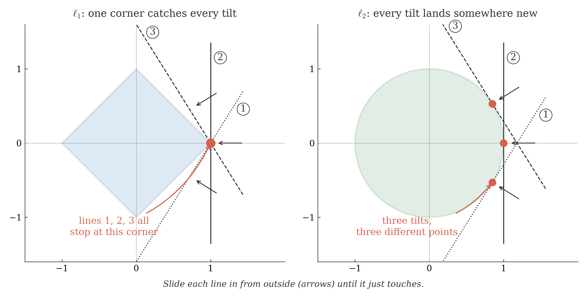

X is a mild action movie. Y is a BIGGER action movie (same mix, double the intensity).
Z is a pure comedy — completely different taste.
Which two movies should Spotify-for-movies recommend together: X and Y, or X and Z?
Now name it: vector
A vector in \(\R^d\) is an ordered list of \(d\) real numbers:
\[\mathbf{x} = (x_1, x_2, \ldots, x_d)^\top.\]
Convention: vectors are column vectors. The \({}^\top\) makes the row into a column.
In geometry: an arrow with direction and length.
In data science: a feature list describing one object.
\(d\) = number of features. ChatGPT uses \(d = 12{,}288\). We start with \(d = 2\) or \(3\).
Every AI system begins by converting real things into vectors. No vectors, no AI.
Vector arithmetic: adding and scaling
Let \(\mathbf{x} = (2, -1)\) and \(\mathbf{y} = (-3, 4)\).
Addition: \(\mathbf{x} + \mathbf{y} = (2 + (-3),\; -1 + 4) = (-1, 3)\). Like combining two ingredient lists.
Scaling: \(2\mathbf{x} = (4, -2)\). Like doubling a recipe — same proportions, bigger batch.
All arithmetic is component by component.
Quick check: vectors
Compute \(2\mathbf{x} - \mathbf{y}\) for \(\mathbf{x} = (2, -1)\) and \(\mathbf{y} = (-3, 4)\).
Multiply matching entries. Add the products. Get one number.
Why the two forms are the same: our vectors are column vectors, so transposing \(\mathbf{x}\) makes it a row, and row \(\times\) column gives one number. We write \(\mathbf{x}^\top \mathbf{y}\) from now on.
This is exactly the same operation inside the attention formula: \(QK^\top\).
When ChatGPT asks "how related is this word to that word?" — it computes a dot product.
Worked example: similar movies
Movie X = (3, 1, 0) and Movie Y = (6, 2, 0). Both are action-heavy.
\(\ell_2\) penalizes large entries harshly (squaring). One big error dominates.
\(\ell_1\) treats all entries equally (absolute value). Many small errors add up.
AI training measures prediction error with exactly these two. Squaring gives mean squared error (MSE); absolute values give mean absolute error (MAE). Each is one of these norms applied to the error vector, divided by \(n\).
L1 vs L2: different shapes
Both measure size. Do they agree on what "size \(\le 1\)" looks like?
\(\ell_2\): \(x^2 + y^2 \le 1\) — a disk, with a round boundary.
\(\ell_1\): \(|x| + |y| \le 1\) — a diamond, with four straight edges.
They touch at exactly four points, \((\pm 1, 0)\) and \((0, \pm 1)\). Check one: \((1,0)\) has \(\norm{\cdot}_2 = \norm{\cdot}_1 = 1\), so it lies on both boundaries.
Everywhere else the diamond is strictly inside the disk — which looks backwards, since \(\ell_1\) gives the bigger number. But recall \(\mathbf{u}=(-2,5)\): \(\ell_1\) said \(7\), \(\ell_2\) said \(5.4\). Walking the blocks is never shorter than cutting across. And bigger numbers mean fewer vectors get under \(\text{size}\le 1\) — so the \(\ell_1\) shape is the smaller one.
\(\mathbf{v} = (0.7, 0.7)\): \(0.99\) from \(\ell_2\), \(1.4\) from \(\ell_1\) — inside the disk, outside the diamond.
Why the corners matter
Slide a straight line in from outside until it just touches. Where does it touch first?
Diamond: a corner — tilt the line and it still stops at the same corner. Only a line parallel to an edge stops along that edge.
Circle: a different point for every tilt, each reached by exactly one tilt. No point is special.
In the plane, those corners are exactly the boundary points with an entry equal to 0.

What a corner means in ML: a weight of exactly \(0\) is a feature the model switched off. Landing on corners is therefore automatic feature selection — give it 50,000 candidate inputs, get back a few hundred, and read off which. Unit 5 calls this Lasso.
Any vector with at most one nonzero entry — \((3, 0, 0)\), \((0, -4, 0)\). Nothing to add up, so both norms give \(|{\cdot}|\) of that one entry.
Those are exactly the diamond's corners. Everywhere else \(\ell_2 < \ell_1\): the straight line beats the city blocks.
Finding the closest match
Spotify has 100 million songs, each described by a vector. You just liked a song.
Spotify's job: find the song whose vector is closest to the one you liked.
We know how to measure the size of ONE vector (norms).
Distance between two vectors = size of their difference.
Nearest-neighbor search is behind recommendation, image search, and even ChatGPT's retrieval system.
Now name it: distance
Distance is the size of the difference — so every norm gives one:
\[d(\mathbf{x}, \mathbf{y}) = \norm{\mathbf{x} - \mathbf{y}}\]
With \(\ell_2\): \(\sqrt{\sum_i (x_i-y_i)^2}\) — straight-line distance. This is the default: when we write "distance" with no subscript, we mean this one.
With \(\ell_1\): \(\sum_i |x_i-y_i|\) — city-block distance. The right one for anything that has to travel on a grid.
Whichever you pick, the same three properties hold:
Always \(\ge 0\). Equals \(0\) only when \(\mathbf{x} = \mathbf{y}\) (same point).
Symmetric: distance from A to B = distance from B to A.
Triangle inequality: the direct path is never longer than a detour.
Worked example: how far apart?
Two data points: \(\mathbf{x} = (1, 2)\) and \(\mathbf{y} = (4, 6)\).
\(\hat{\mathbf{x}}\) points the same way as \(\mathbf{x}\) but has length exactly 1. (\(\mathbf{x} = \mathbf{0}\) is excluded: length \(0\), nothing to divide by, no direction.)
Our two movie fans: \(\norm{(8,2,0)}_2 = \sqrt{68}\) and \(\norm{(4,1,0)}_2 = \sqrt{17} = \sqrt{68}/2\), so both become \((8,2,0)/\sqrt{68} \approx (0.97,\, 0.24,\, 0)\) — the same vector. Check: \(0.97^2 + 0.24^2 \approx 1\). The intensity gap is gone; the shared taste survives.
Now the payoff. Two unit vectors, one dot product — that number turns out to be the cosine of the angle between them. Next slide proves it.
Two unit vectors: the dot product is a cosine
In the plane, a unit vector sits on the unit circle, so it is fixed by its own angle:
\(\hat{\mathbf{x}} = (\cos\alpha,\ \sin\alpha)\), \(\hat{\mathbf{y}} = (\cos\beta,\ \sin\beta)\).
Dot them, then use the angle-subtraction identity you already know:
\[\hat{\mathbf{x}}^\top \hat{\mathbf{y}} = \cos\alpha\cos\beta + \sin\alpha\sin\beta = \cos(\alpha - \beta).\]
And \(\alpha - \beta\) is the angle between them. Nothing was named — it was derived.
Now name it: cosine similarity
That settles unit vectors. What about two ordinary vectors, of any length? Normalize each one first, then dot — which is the same as dividing at the end:
So the denominator is not a fudge factor: it is the normalizing step, written into the formula. For unit vectors it equals 1 and the formula collapses back to the last slide.
In \(\R^{300}\) there is no picture to read an angle off, so we run it backwards and define the angle by \(\theta = \arccos(\cdot)\). Legal because the value never leaves \([-1,1]\), and safe because in the plane we just proved it agrees with the ordinary angle.
Reading the number
Value
Meaning
Example
\(\cos\theta = 1\)
Same direction
Two action fans (different intensity)
\(\cos\theta \approx 0.9\)
Strong agreement
Mostly the same taste, minor disagreements
\(\cos\theta = 0\)
Perpendicular
Action fan vs. someone who only cares about comedy
\(\cos\theta = -1\)
Opposite direction
One loves what the other hates
Two of these are already proved: \(\alpha = \beta\) gives \(\cos 0 = 1\), and \(\alpha - \beta = 90^\circ\) gives \(\cos 90^\circ = 0\).
Google turns your query into a vector and every page into a vector, then ranks by cosine similarity. Highest cosine wins — which is why "best pizza near me" returns pizza reviews and not sushi.
Worked example: three steps
Let \(\mathbf{x} = (1, 2)\) and \(\mathbf{y} = (3, -1)\). How similar is their direction?
Read it honestly: \(0.14\) is barely above \(0\). Since \(\cos 90^\circ = 0\), this is \(\theta \approx 82^\circ\) — nearly perpendicular. The positive sign says they lean the same way rather than opposite ways, and that is all it says.
\(\cos\theta = \dfrac{1}{1 \cdot \sqrt{2}} = \dfrac{1}{\sqrt 2} \approx 0.71\) — and \(\theta = 45^\circ\), which the picture agrees with.
2. \(\mathbf{x} = (3,1)\), \(\mathbf{y} = (-1,3)\). Do it in your head.
Numerator \(= -3 + 3 = 0\), so \(\cos\theta = 0\): perpendicular. The sign and the zero come from the dot product alone — the norms only rescale.
3. Harder: \(\cos\theta = 1\). Must \(\mathbf{x} = \mathbf{y}\)?
No. It only forces \(\mathbf{y} = c\,\mathbf{x}\) for some \(c > 0\) — same direction, any length. Equal is the special case \(c = 1\). That blindness to length is the entire point.
L01 takeaways
Tool
Input
Output
What it measures
Tier
Dot product
two vectors
a number
agreement / alignment
MASTER
L2 Norm
one vector
a number \(\ge 0\)
size / length
MASTER
Distance
two vectors
a number \(\ge 0\)
how far apart
MASTER
Cosine
two vectors
\([-1, 1]\)
direction similarity
MASTER
L1 Norm
one vector
a number \(\ge 0\)
city-block size
UNDERSTAND
These tools are the foundation of step 2 ("measure closeness") in every AI application we saw in Unit 0.
Preview
We can now compare vectors. But what transforms them?
Next time: matrices as machines that transform data.
If vectors are the data, matrices are the model — the thing that turns inputs into predictions.
L02 — Matrices: Transformation Machines
How does a model transform inputs into predictions — all at once?
One operation. Three predictions. Each output is a dot product of one row with \(\mathbf{w}\).
Now name it: matrix-vector multiplication
For \(A \in \R^{m \times n}\) and \(\mathbf{x} \in \R^n\):
\[(A\mathbf{x})_i = \sum_{j=1}^n a_{ij} x_j.\]
Each output entry = dot product of row \(i\) with \(\mathbf{x}\).
Dimensions: \(A \in \R^{m \times n}\), \(\mathbf{x} \in \R^n\) \(\Rightarrow\) \(A\mathbf{x} \in \R^m\). Input has \(n\) entries, output has \(m\).
In AI this is one layer of a network: \(A\) = learned weights, \(\mathbf{x}\) = one input, \(A\mathbf{x}\) = its output. Careful — linear regression writes the same operation the other way round, \(X\mathbf{w}\), with the data first. We sort the two out before the end of L02.
If we apply \(A\mathbf{x}\) to every point in a grid, what happens to the grid?
Lines stay as lines (they do not curve).
The origin stays fixed.
The grid can stretch, rotate, reflect, or shear — but never bend.
This is like an Instagram filter that can resize, rotate, and flip your photo — but can't warp or distort curves.
Grid transformation
A matrix can stretch, rotate, reflect, or shear — but always keeps lines straight.
What makes it "linear"?
A linear map \(\Phi\) satisfies two rules:
Additivity: \(\Phi(\mathbf{x} + \mathbf{y}) = \Phi(\mathbf{x}) + \Phi(\mathbf{y})\). Transform the sum = sum of transforms.
Scaling: \(\Phi(\alpha \mathbf{x}) = \alpha \Phi(\mathbf{x})\). Transform the scaled = scale the transform.
Every matrix \(A\) defines a linear map via \(\mathbf{x} \mapsto A\mathbf{x}\). Linear models in data science — regression, PCA, attention — all use this structure.
Chaining transformations
What if we apply one transformation and then another? Can we combine them into a single matrix?
First transform: rotate the grid (matrix \(B\)).
Then transform: stretch the grid (matrix \(A\)).
Combined: one matrix \(C = AB\) does both at once.
Neural networks are exactly this: layer after layer of matrix multiplications, each transforming the data further.
Now name it: matrix multiplication
For \(A \in \R^{m \times n}\) and \(B \in \R^{n \times p}\):
\[(AB)_{ik} = \sum_{j=1}^n a_{ij} b_{jk}.\]
Each entry of \(AB\) = dot product: row \(i\) of \(A\) with column \(k\) of \(B\).
Dimensions: \(\R^{m \times n} \cdot \R^{n \times p} \Rightarrow \R^{m \times p}\). The inner \(n\)'s must match.
\(BA\): \(B\) is \(3 \times 4\), \(A\) is \(2 \times 3\). Inner dimensions \(4 \ne 2\). Not defined.
The same object, two jobs
A matrix is a rectangular array of numbers. What it means is not in the array — it is in where the array came from. This course uses two:
Data matrix \(X\)
Transformation \(A\)
a row is
one sample
one output coordinate
a column is
one feature
one input coordinate
it holds
measurements you collected
what the map does
The arithmetic is identical — row \(i\) dotted with the vector, every time. Only the story changes.
And you may switch stories on purpose. Hold \(X\) fixed and let \(\mathbf{w}\) vary: now \(X\) is a machine, turning any weight vector into \(n\) predictions. Unit 2 needs exactly that reading — least squares asks which of the reachable prediction vectors comes closest to the truth.
Notation warning: regression writes \(X\mathbf{w}\) (data first), a network layer writes \(W\mathbf{x}\) (weights first). Same operation. Read the shapes, not the letter.
The prediction pipeline
How does matrix-vector multiplication look in a real prediction pipeline?